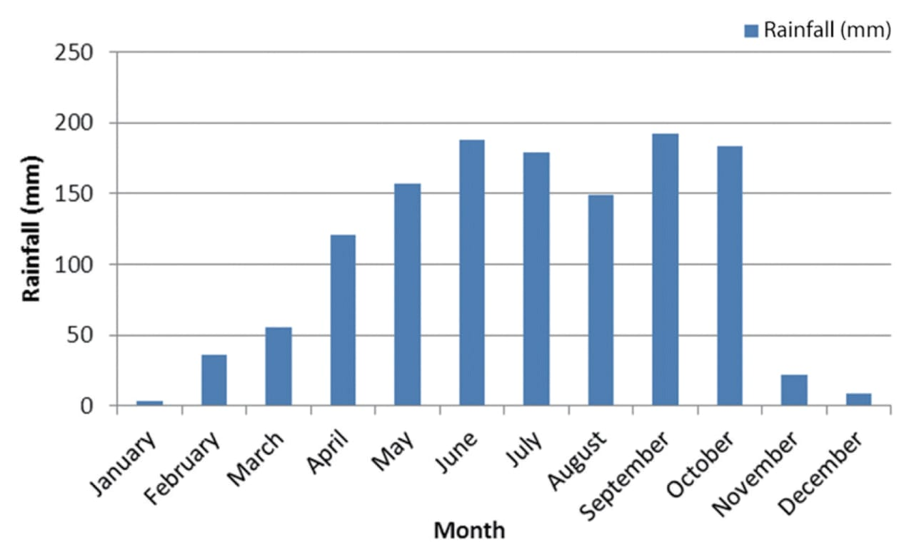
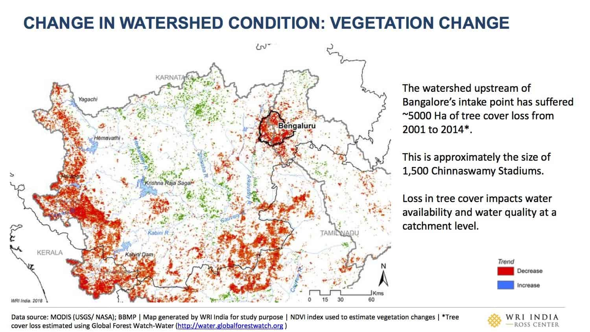
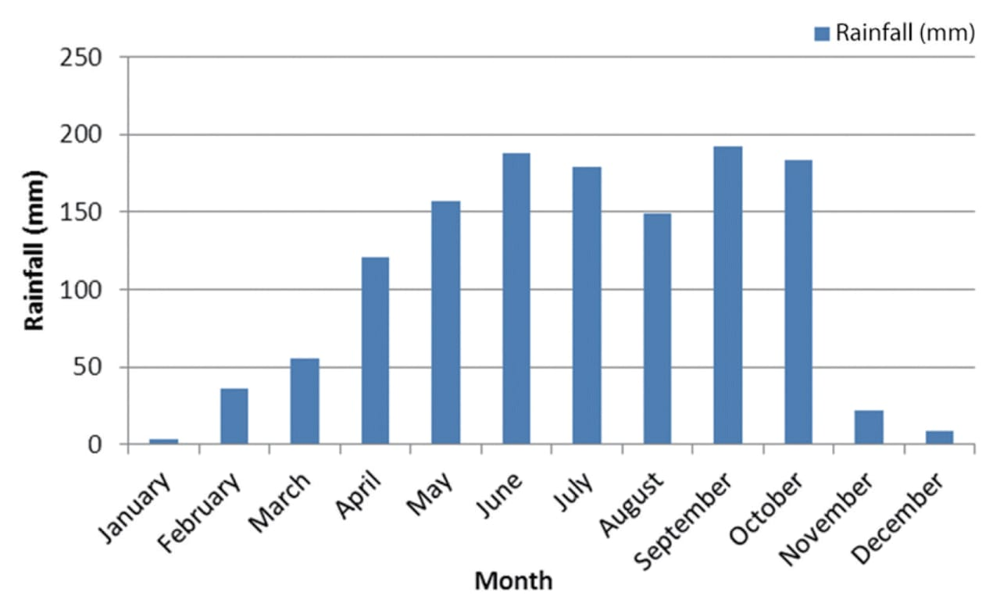
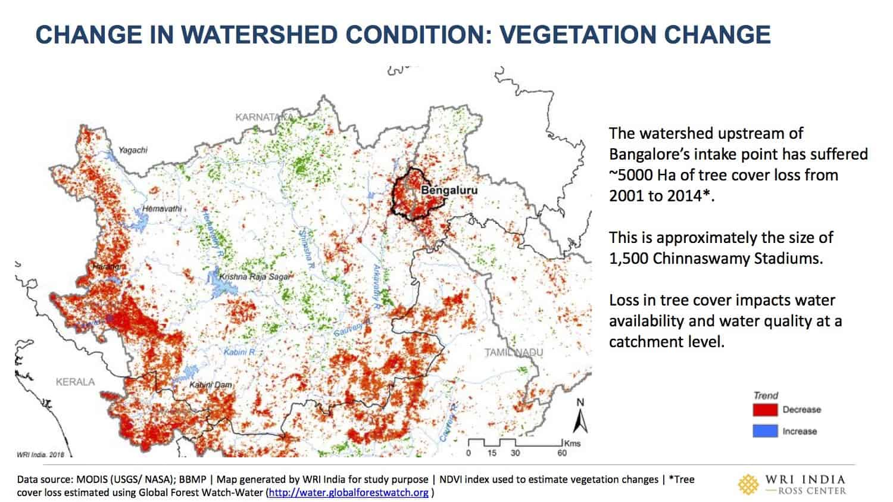
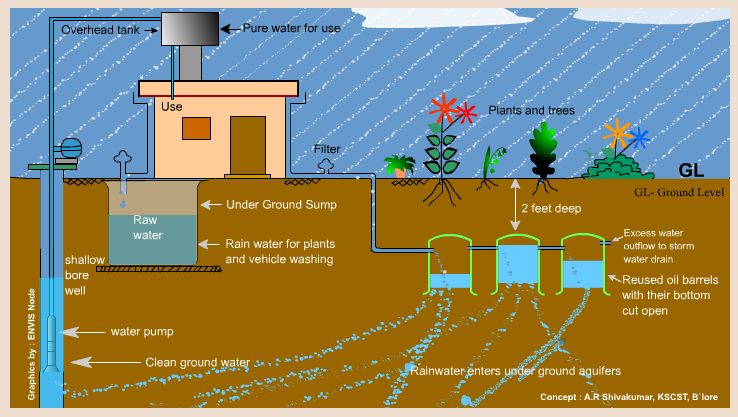
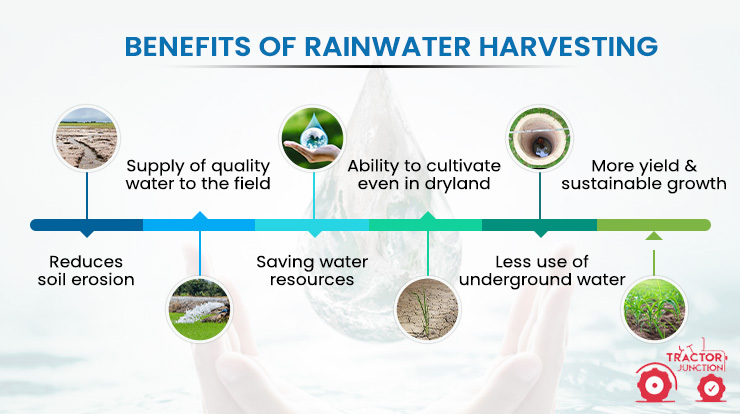
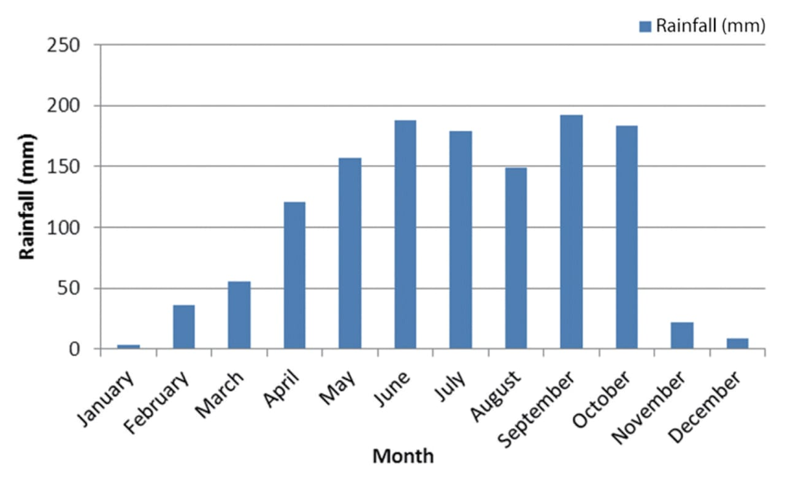
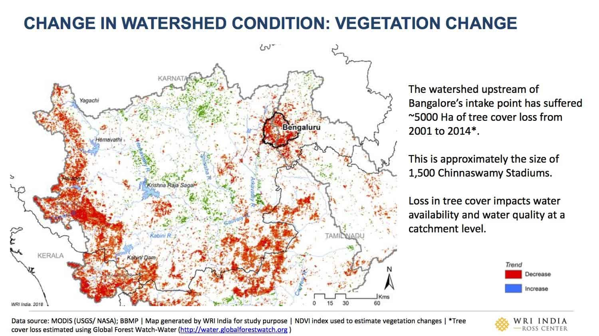

Graphs And Maps
 



Rainwater Harvesting means the collection and storage of rainwater in different containers. Rainwater harvesting requires proper filtration and keeps the water fit for any use. The primary purpose of rainwater harvesting is to keep the rainwater conserved to recharge the underground water and store the surplus available water for the crisis. Rain falls everywhere, but it must not be allowed to run or roll downwards. The conserved harvested water must be lifted using shallow or deep tube-wells. Rainwater harvesting provides numerous purposes for everyday routine. The stored water is used for agricultural purposes or filtered to be used as drinking water. Rainwater harvesting can be used to store water under the surface or in a reservoir. The stored water is later used with the use of containers, or tubes, or pipes. Rainwater can also be filled in canals, big ditches, watercourses, or ponds, to replenish the water storage. With the water crisis becoming a significant issue, rainwater can help recharge stored water and ensure water availability in scare zones. Rainwater harvesting can be practiced in apartments as well as in individual homes.

Rainwater Harvesting positively affects underground water quality.
It dilutes the number of
nitrates,
fluorides, and the salinity of the underground water.
It contains zero hardness and almost neutral pH, making it highly suitable for industries, homes,
institutions, industries, and other commercial establishments.
Rainwater Harvesting reduces water supply bills.
It is an excellent method that solves the water shortage crisis and lessens the energy consumption in water
disturbance.
Rooftop Rainwater harvesting controls urban flooding.
Recharge of rainwater to the ground in the coastal regions prevents the seawater immersion into the
freshwater.
Rainwater harvesting is an alternative to reduce the stress of public water supply sources.
Construction of deeper wells can damage the natural environment as well as upscale.Therefore, the source of
rainwater is highly effective and dependable. Stored harvested rainwater can be used as an alternative to
municipal water and used during the water crisis.
Conclusion: Rainwater Harvesting holds vast benefits. To function well, rainwater harvesting systems have to be designed performed and maintained to ensure and maintain the quality of water. The harvested water needs to be purified and filtered before consumption or for other purposes.
Water Butt: The most basic form of harvesting is the humble garden water butt. Water collects in the container from drain pipes and/or natural rainfall, and is mainly used for the watering of garden plants. Users with gardens of a decent size will see a reduction in the amount of mains water used. Pairing the water tank with a rainwater filter can further improve the quality of the harvested rainwater.
Direct-Pumped (Submersible): This is the most common type of more professional rainwater harvesting system, particularly for domestic properties, and is generally the easiest to install. The pump is located within the underground tank and harvested water is simply pumped directly to the WCs or other appliances. If the tank should be in danger of running dry, a small amount of mains water is fed to it in order to maintain supply. For commercial projects, such systems tend to be dual pump arrangements (dutystandby).
Direct-Pumped (Suction): This system differs in that the pump is not inside the tank, but instead is located within a control unit within the house (e.g. utility room). The unit also deals with the backup from mains water supply, so there is no need to send mains water down to the tank.
Indirect Gravity: This type of system differs in that the harvested water is first pumped to a high level tank (header tank), then allowed to supply the outlets by gravity alone. With this arrangement, the pump only has to work when the header tank needs filling. Also the mains water is fed directly to the header tank, not into the main harvesting tank.
Indirect Pumped: This arrangement is similar to the above, except that the internal tank can be at any level in the building, as it does not rely on gravity to supply the outlets. Instead a booster pump set is used to provide a pressurised supply. This system employs the benefit of not having to feed mains back-up water to the underground tank, whilst also offering great flexibility as the booster pumps can be tailored to suit the flow and pressure requirements of the building.
Gravity Only: In some situations It may be possible to have a system that functions purely through gravity, requiring no pump and therefore no energy use. With this arrangement, rainwater is collected from a part of the roof which has gutters above the filter and collection tank which are in turn above all the outlets. This arrangement is ONLY ever possible where the storage tank can be located below the level of the gutters, yet higher that the outlets that it will supply. Only the power of gravity is needed to feed collected and filtered water to various parts of the home for use, so it is an ultra-energy efficient option.
Understand the Rainwater Harvesting Potential: Assess the rainfall patterns in your area. Consider factors like average annual rainfall, roof size, and catchment area. Understanding the potential helps you plan effectively.
Plan the Layout: Decide where you’ll collect rainwater. The catchment area can be your rooftop, paved surfaces, or open ground. Plan the layout for components like gutters, downspouts, and pipes to channel rainwater.
Setup Storage Units: Install storage tanks or containers to hold the collected rainwater. These can be above-ground or underground. Ensure the storage units are clean and free from contaminants.
Finalize System Features: Add features like first-flush diverters to remove debris and contaminants during the initial rainfall. Consider using filters to improve water quality.
Install Pipes and Tanks: Connect the downspouts from your roof to the storage tanks. Use pipes to transport rainwater from the catchment area to the storage units.
Test Your System: After installation, test the rainwater harvesting system to ensure it functions properly. Monitor water quality and usage.

